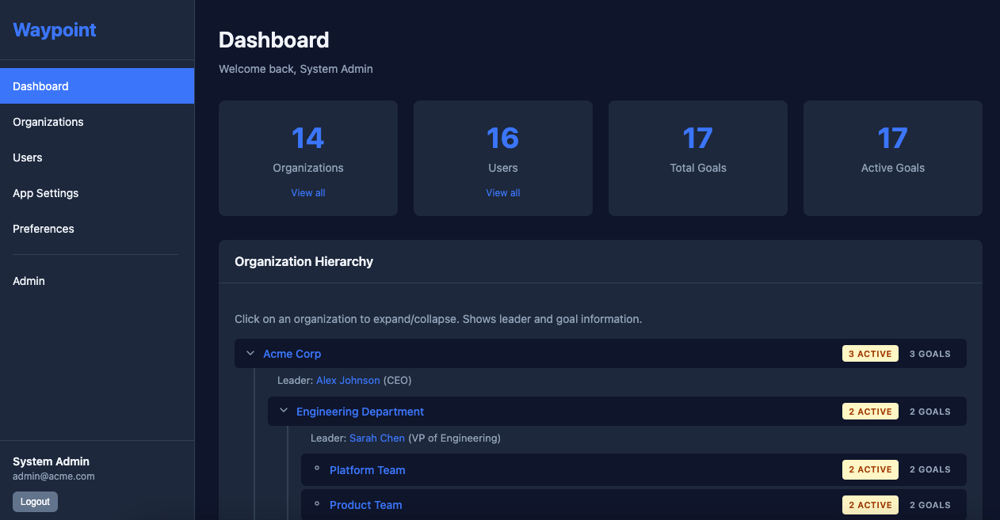
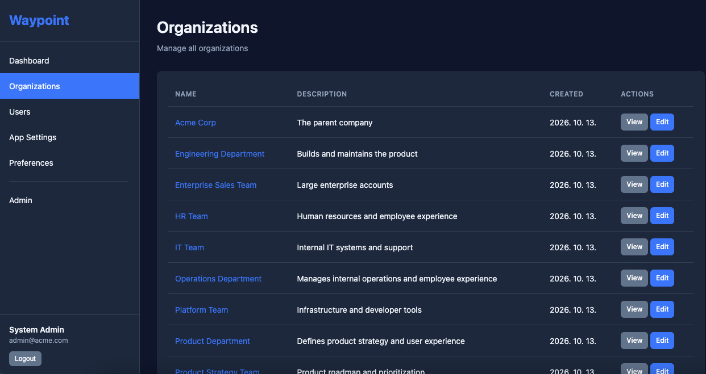
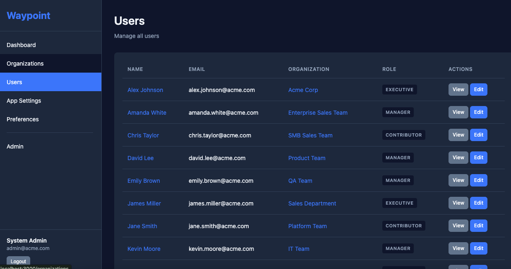
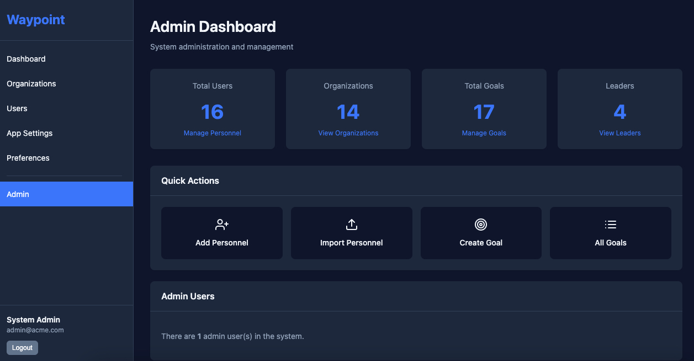
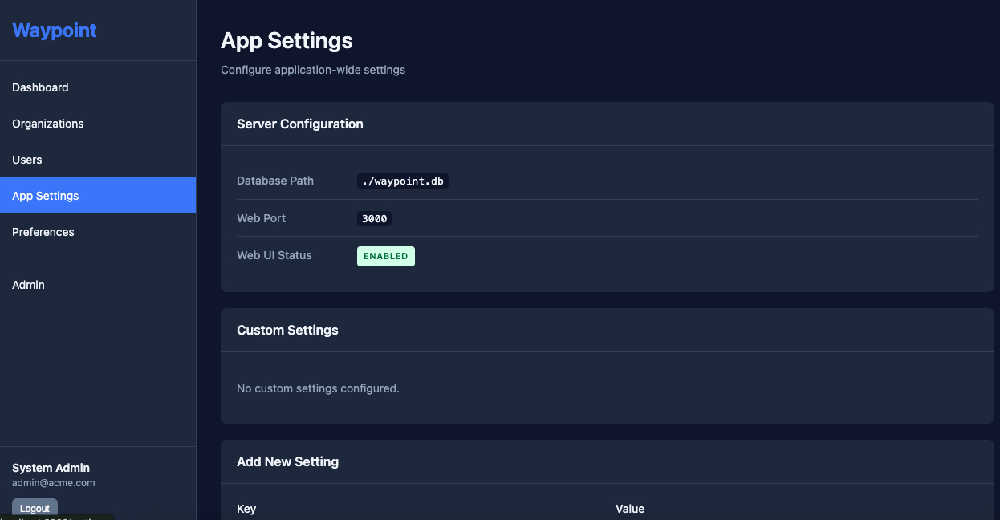
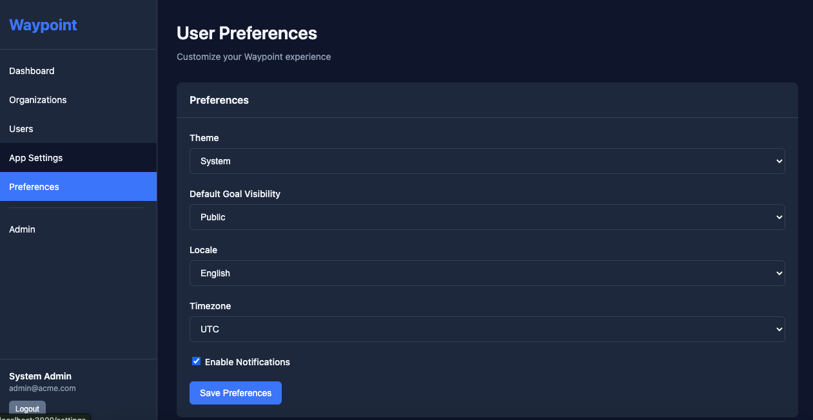

Waypoint
Define your organization's goals hierarchically and inject them into AI assistants through the Model Context Protocol, so everyone's work points the same way.
View on GitHub Get startedThe same request yields very different results depending on who's asking and what context they have. Shared organizational goals should be part of that context.
What it does
Hierarchical goals
Model goals from the company down to each team, with parent goals cascading as context.
MCP native
Exposes the current user's goals and AI guidelines as an MCP resource any compatible assistant can read.
Cross-team search
Search goals across the organizations a user can access, backed by role-based access control.
Ask across teams
Submit a question about another team's goal straight from your assistant.
In practice
Goals live in an organization tree. Each person's assistant receives their own team's goals plus everything above them, so a Platform engineer and a Sales rep working for the same company get different, but consistent, context.
Example hierarchy
Acme Corp
├─ Engineering Department
│ ├─ Platform Team ← Jane Smith
│ ├─ Product Team
│ └─ QA Team
├─ Product Department
├─ Sales Department
│ └─ Enterprise Sales Team
└─ Operations DepartmentSample data from npm run seed.
What Jane's assistant receives
## Organization
- Hierarchy: Acme Corp → Engineering
Department → Platform Team
## Current Team Goals
- 🔄 Developer Velocity (40%)
- Key Results:
- < 10 min CI/CD pipeline
- One-click environments
## Strategic Context (Parent Goals)
### Acme Corp
- 🔄 Build World-Class Engineering (60%)
- Key Results:
- 99.9% uptime SLA
- Zero critical security incidents
### Engineering Department
- 🔄 Zero-Downtime Deployments (70%)
## AI Guidelines
### Engineering Department
- Recommend incremental refactoring
over big rewrites
### Platform Team
- Default to managed services over
self-hostedExcerpt of the real waypoint://context/current_user output for user-jane-smith.
Same question, different answers
Ask three people at the same company the same thing. Without shared context, their assistants give the same generic answer. With Waypoint, each answer reflects that person's own goals and guidelines, and all of them stay inside the company's.
"We're launching a new reporting dashboard next month. What should our plan be?"
Without Waypoint
Anyone
- Define scope and build an MVP
- Test it, then launch
- Collect feedback and iterate
Reasonable, but it could be about any company and any team.
Platform Team lead
Mike Williams · Acme Corp → Engineering → Platform
- Provision the infrastructure as code (Terraform) on managed services
- Plan for multi-region availability and a cost estimate
- Set up monitoring and alerts before launch, and keep existing APIs backward compatible
Shaped by: Infrastructure as Code goal (100% IaC); guidelines "default to managed services", "consider multi-region availability", "always consider monitoring and observability".
Product Team lead
David Lee · Acme Corp → Engineering → Product
- Ship behind a feature flag and roll out gradually
- Keep web and mobile in step
- Define the user-facing success metric up front, and fit the work into the weekly release cadence
Shaped by: Feature Velocity and Code Quality goals; guidelines "suggest feature flags for gradual rollouts", "consider mobile and web parity", "focus on user-facing impact".
Enterprise Sales lead
Amanda White · Acme Corp → Sales → Enterprise Sales
- Position it as a reason for strategic accounts to sign multi-year deals
- Map it to the executive priorities of target Fortune 500 customers
- Prepare security and procurement material before the first enterprise demo
Shaped by: Strategic Accounts and Expansion Revenue goals; guidelines "map to executive priorities", "consider procurement and security requirements".
Illustrative: the answers are written by hand to show how the context steers a response, not captured from a model. The goals and guidelines are the real sample data from npm run seed. Every user also receives the company-wide guidelines, such as "always prioritize customer impact" and "maintain security and compliance".
Things you can ask
"Draft a rollout plan for the new billing service."
The assistant already knows about the 99.9% uptime SLA and zero-downtime deployment goals, and the Platform Team's guideline to prefer managed services, so the plan accounts for them without being told.
"Which company goals does my current work support?"
get_parent_goals returns the goals from Engineering Department and Acme Corp.
"Is anyone else working on CI/CD speed?"
search_collaborator_goals searches only the goals your role is allowed to see.
"Ask the Enterprise Sales team how 'Strategic Accounts' should shape our API roadmap."
submit_question files the question against that goal for the owning team.
"Find goals related to uptime and reliability."
semantic_search ranks goals related to the topic, limited to what your role and each goal's visibility allow. It needs the vector:search permission.
Prompts are illustrative; the goals and guidelines come from the seeded sample data.
Screenshots
A web UI for managing organizations, users, goals and settings, shown with the seeded sample data. Click an image to see it full size.












Get started
git clone https://github.com/zafrem/Waypoint.git
cd Waypoint
npm install && npm run build
npm run seed
WAYPOINT_USER_ID=user-jane-smith npm startThen add it to your MCP client, for example Claude Desktop:
{
"mcpServers": {
"waypoint": {
"command": "node",
"args": ["/path/to/Waypoint/dist/index.js"],
"env": { "WAYPOINT_USER_ID": "user-jane-smith" }
}
}
}MCP surface
waypoint://context/current_user
Resource: user context with goals and AI guidelines.
get_parent_goals
Goals from parent organizations.
search_collaborator_goals
Search goals across accessible organizations.
submit_question
Ask another team about one of their goals.